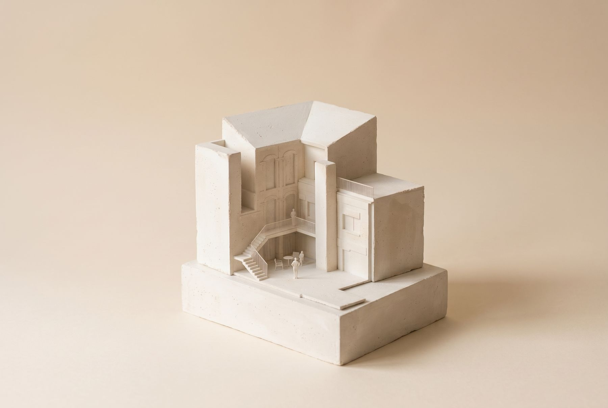
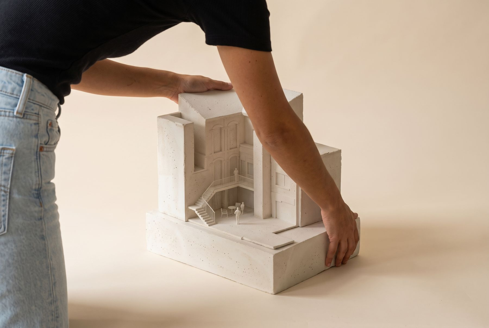

Garden design and lift addition
An almost surgical intervention in a village house: a new lift so its owners can keep living there for many years to come.
The house faces the village's central square, but much of its life turns towards its garden. On the first floor, the kitchen, dining room and main bedroom open onto it.
On the ground floor, the garden is reached mostly from a side street. It is a secondary entrance, but the one the owners use most: the house's parking is there too. From there you enter the garden and climb a stair to the kitchen.
The owners are getting older and need a lift. Fitting one in was not easy: the garden is not large, although it is very well used and very beautiful. We made model studies to decide with them where it should go.
The solution comes in two phases. First, the lift goes up to the first floor, to the kitchen. Later, if needed, it will be extended to the second floor.
With the works under way, the materials of the garden are being reconsidered and the whole garden improved, as it is somewhat neglected today.

